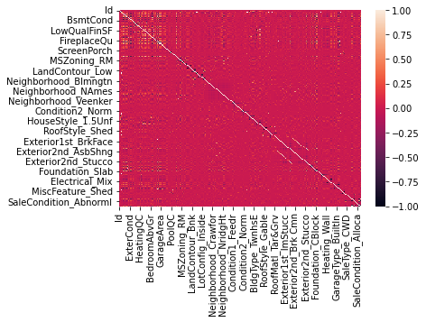
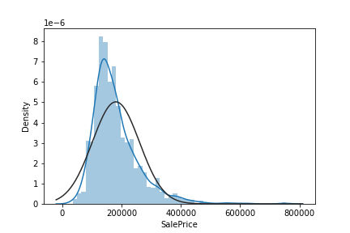
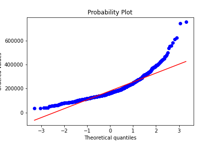
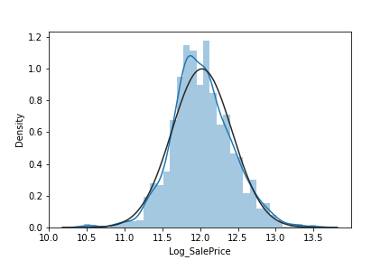
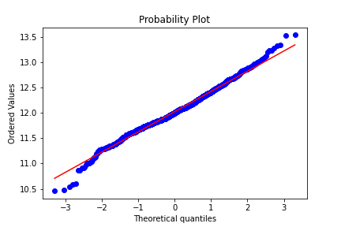
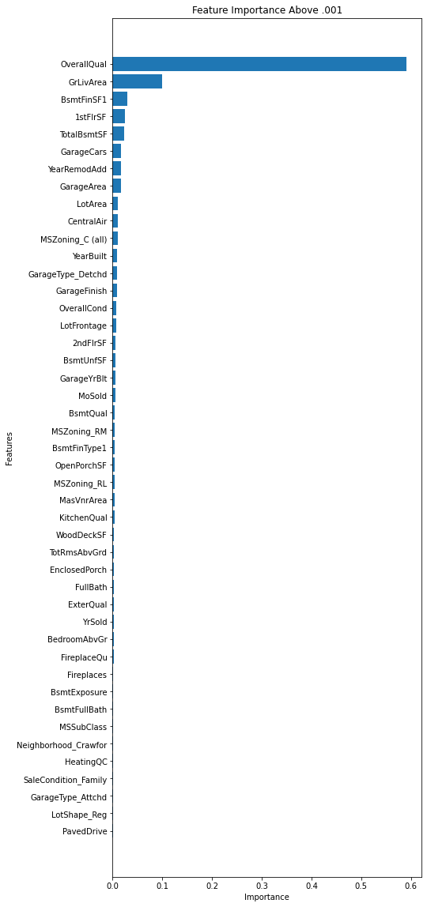
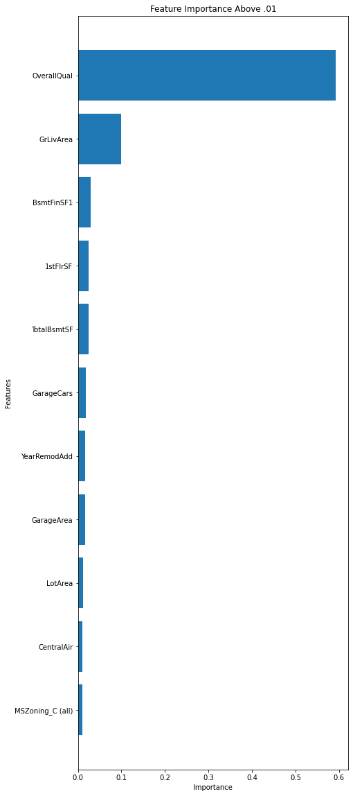

What Do Home-Buyers Care About?
Contents
What Do Home-Buyers Care About?¶
The question we sought to analyze is the following: Which factors most influence the price of the home?
The goal of our research is to give home-seller a better understanding of which features add to the value of a home, allowing sellers to use these influences price-negotiation with buyers! We will try to find the answer for this question by exploring a dataset consistenting of every aspect of residential homes in Ames, Iowa, and finding which ones correlate most to Price. We will mainly use the Random Forest model to figure out which variables are the most critical to deciding the housing price in Ames.
Exploratory Data Analysis on the House_Price.csv¶
import pandas as pd
---------------------------------------------------------------------------
ModuleNotFoundError Traceback (most recent call last)
Input In [1], in <cell line: 1>()
----> 1 import pandas as pd
ModuleNotFoundError: No module named 'pandas'
data = pd.read_csv('data/House_Price.csv')
data.head()
| Id | MSSubClass | MSZoning | LotFrontage | LotArea | Street | Alley | LotShape | LandContour | Utilities | ... | PoolArea | PoolQC | Fence | MiscFeature | MiscVal | MoSold | YrSold | SaleType | SaleCondition | SalePrice | |
|---|---|---|---|---|---|---|---|---|---|---|---|---|---|---|---|---|---|---|---|---|---|
| 0 | 1 | 60 | RL | 65.0 | 8450 | Pave | NaN | Reg | Lvl | AllPub | ... | 0 | NaN | NaN | NaN | 0 | 2 | 2008 | WD | Normal | 208500 |
| 1 | 2 | 20 | RL | 80.0 | 9600 | Pave | NaN | Reg | Lvl | AllPub | ... | 0 | NaN | NaN | NaN | 0 | 5 | 2007 | WD | Normal | 181500 |
| 2 | 3 | 60 | RL | 68.0 | 11250 | Pave | NaN | IR1 | Lvl | AllPub | ... | 0 | NaN | NaN | NaN | 0 | 9 | 2008 | WD | Normal | 223500 |
| 3 | 4 | 70 | RL | 60.0 | 9550 | Pave | NaN | IR1 | Lvl | AllPub | ... | 0 | NaN | NaN | NaN | 0 | 2 | 2006 | WD | Abnorml | 140000 |
| 4 | 5 | 60 | RL | 84.0 | 14260 | Pave | NaN | IR1 | Lvl | AllPub | ... | 0 | NaN | NaN | NaN | 0 | 12 | 2008 | WD | Normal | 250000 |
5 rows × 81 columns
data.shape
(1460, 81)
The House_Price.csv consists of 1460 rows, with each row representing a single house on the market. It has 81 columns, which are the features of each house, however, we will only use 79 columns as out features after we take out ID columns, which do not represent anything, and SalePrice, which is our predicting variable. First of all, we will use label and one-hot encoding to convert our categorical varibles into dummy variables so that we can start the analysis. We mixed both encoding methods, since we figured out that for ordinal categorical variables, the label encoding works better, and for cardinal categorical variables, one-hot encoding works better.
Feature Correlation¶
First, we will observe the dataset, and see if we have any inter-relationship between features that shows high correlation. We don’t have to do any feature selection because first, we don’t have lots of features to investigate, and second, the random forest model’s accuracy doesn’t get suffered from collinearity. Despite these, we want to observe its inter-correlation since observing highly interacting variables might give us some hint to our overall question, and removing highly correlated variables can help us mitigate the possible dangers and impacts of overfitting.
This is the correlation matrix and list of features that have high inter-correlation between the other variables (more than 0.5).

high_cor = pd.read_csv('data/top_cor.csv')
high_cor
| Unnamed: 0 | SalePrice | |
|---|---|---|
| 0 | OverallQual | 0.790982 |
| 1 | YearBuilt | 0.522897 |
| 2 | YearRemodAdd | 0.507101 |
| 3 | ExterQual | -0.636884 |
| 4 | BsmtQual | -0.620886 |
| 5 | TotalBsmtSF | 0.613581 |
| 6 | 1stFlrSF | 0.605852 |
| 7 | GrLivArea | 0.708624 |
| 8 | FullBath | 0.560664 |
| 9 | KitchenQual | -0.589189 |
| 10 | TotRmsAbvGrd | 0.533723 |
| 11 | GarageFinish | -0.549247 |
| 12 | GarageCars | 0.640409 |
| 13 | GarageArea | 0.623431 |
| 14 | SalePrice | 1.000000 |
This result conveys two important pieces of information regarding this dataset.
We initially expected that many varibales will be highly inter-correlated each other (For example, if overall quality is high, then external quality and bathroom quality will be high as well), but suprisingly we have very few of them are correlated. Most of our variables have inter-correlation less than 0.5.
It is interesting to see that some qualities are negatively correlated with other variables, while overall qualities shows positive correlations with other variables. Only variables on quality shows some unexpected behavior than other variables.
From our correlation matrix, we can conclude that we are good to use this dataset for our analysis, since we don’t have too many correlating variables. Also, it looks like we don’t have to eliminate any features, since every variable has a correlation of less than 0.8.
Observation on SalePrice¶
We also want to observe whether our SalePrice is normally distributed or not. In many occasions, normality of output variables do not matter when building a random forest model, but since we are more interested in finding variable importance than building a predictive model, it will be much safer if we normalize our output variables.


From the density plot and and Q-Q plot (Probability Plot), we can observe that we have two issues in normality.
Our graph is right-skewed, so it might need some transformation to center this more.
According to our probability plot, our graph is very not normal in the right ends of the distribution.
In order to resolve this issue, log-transformation should be done!


After our log transformation, we can observe that all problems that we talked about previously solved perfectly. Our graph now looks very normal with a good center. We will use our transfomed ourput to fit our random forest model.
Fitting a Random Forest Model and Variable Improtance¶
In order to fit our random forest model, we are seperating our dataset into training and test dataset, so that later, we can calculate MSE to validate our model and its result regarding variable importance.
X_train, X_test, y_train, y_test = train_test_split(X, y, test_size=0.25, random_state=12)
rf = RandomForestRegressor(n_estimators=500)
rf.fit(X_train, y_train)
After we fit our random forest model using the training set, we can observe which variables brought the biggest decrease in MSE when our random forest model tried to predict the result. We found the top 45 variables that brought the large decrease in MSE, meaning they are the most important variables in determining the sale price of the house.

From this chart, we can observe that some variables are definitely more important than other variabled in determining sale price of the house. However, we can also see that some variable shows very small decrease in MSE and they don’t even need to be included in our chart. Therefore, we will adjust our threshold level from 0.001 to 0.01, leaving us with our 11 most important variables.
top_11_var = pd.read_csv('data/top_11_variable.csv')
top_11_var
| Unnamed: 0 | values | |
|---|---|---|
| 0 | MSZoning_C (all) | 0.010421 |
| 1 | CentralAir | 0.010714 |
| 2 | LotArea | 0.011180 |
| 3 | GarageArea | 0.016340 |
| 4 | YearRemodAdd | 0.016502 |
| 5 | GarageCars | 0.017475 |
| 6 | TotalBsmtSF | 0.023750 |
| 7 | 1stFlrSF | 0.024841 |
| 8 | BsmtFinSF1 | 0.029312 |
| 9 | GrLivArea | 0.098964 |
| 10 | OverallQual | 0.591727 |

From this chart, we can observe that the top 5 most important variables in determining Sales Price of House are
OverallQual - Overall material and finish quality
GrLivArea - Above grade (ground) living area square feet
BsmFinSF1 - Type 1 finished square feet
1stFlrSF - First Floor square feet
TotalBsmtSF - Total square feet of basement area
This is somewhat a very obvious result: the two most important qualities in determining house price are overall quality rating and size of the house. But what we also found out was that the living room, the overall first floor and the basement are the three most important rooms of the house in determining the house price. Interestingly, year bulit and whether the house has air condition or not were not very important features in determing the house price.
error = pd.read_csv('data/Combined_Error_Table.csv')
error
| Type of Error | Value | |
|---|---|---|
| 0 | MSE | 0.023271 |
| 1 | RMSE | 0.152548 |
| 2 | Adj R^2 Value | 0.866245 |
If we examine error of our model, we can see that our model was pretty good in predicting the house price, so our variable importance plot will be most likely to be accurate as well.
Author Contributions:¶
Isaac: Initial Code with Random Forest Analysis. Writing scripts for main.ipynb. Made Jupyterbook/guthub site as well as github action
Brandon:
Raj: I focused a lot more on the clean-up aspects of this project. I wrote out the plotting function for all our plots above in order to add that into the package, and not have it here on our final doc. Additionally, I cleaned up and wrote out some of the text above in order to make the story flow throughout, and make it an easier read overall. Finally, I added our license to our GitHub and a README to the doc.